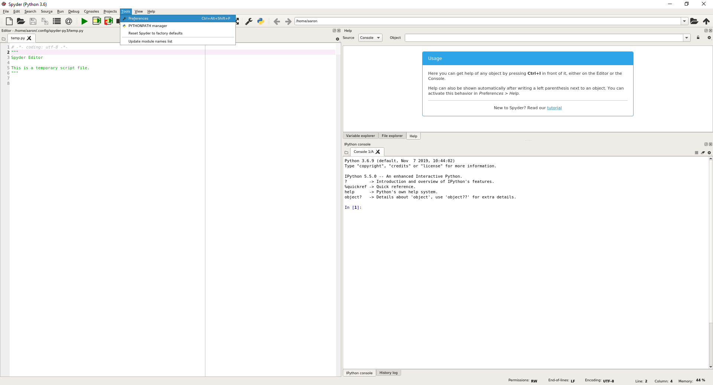
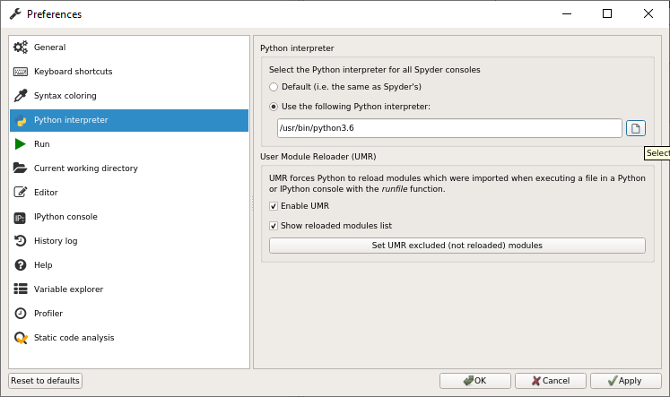
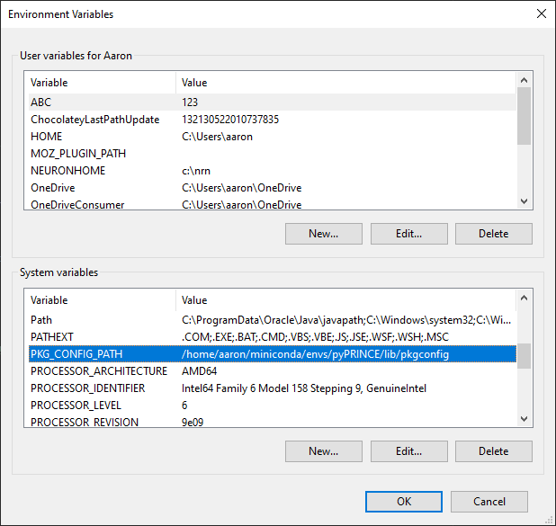
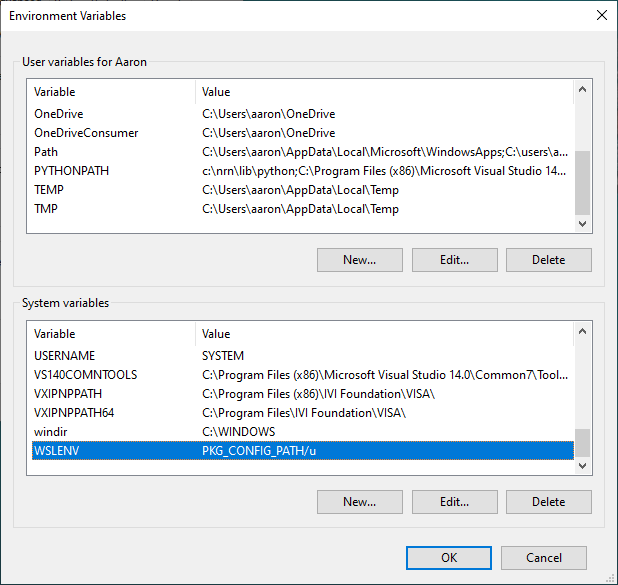
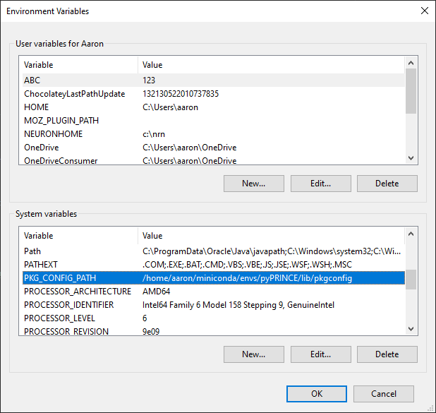
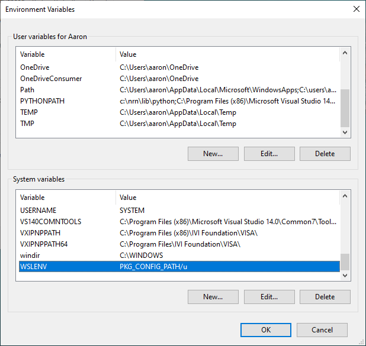
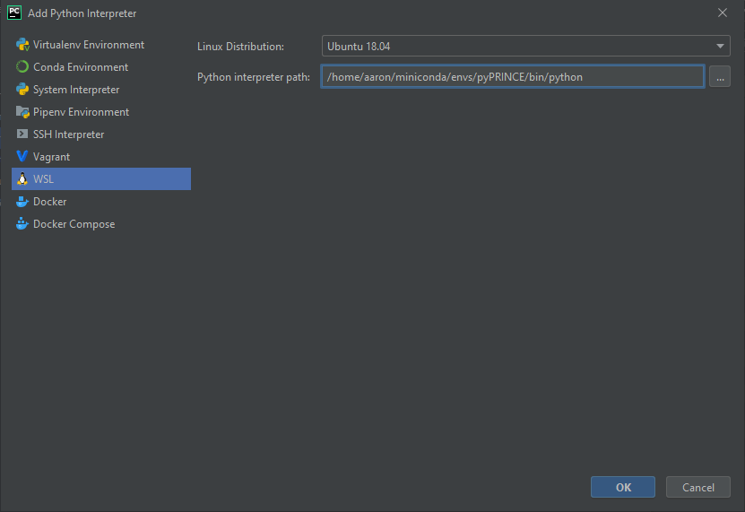

Note
If you have already installed fish2eod and its dependencies and would like to update it you can run .. code-block:: bash
pip install git+https://github.com/aaronshifman/fish2eod.git –upgrade
Please remember that you must be in the correct conda environment
Installation¶
Linux¶
Formally fish2eod has only been tested with Ubuntu 18.04. This is because there is a gmsh requirement >= 3.0 and previous versions of Ubuntu have an out of date version on apt. If you can install gmsh separately any version should work
You’re going to want to download the conda specification
and the install scripts for conda
and dependancies
If you’re using a browser you can “right-click”-“save as” to download the file or if using the command line
curl https://raw.githubusercontent.com/aaronshifman/fish2eod/master/conda_environment.yml -L --output conda_environment.yml
curl https://raw.githubusercontent.com/aaronshifman/fish2eod/master/install_conda.sh -L --output install_conda.sh
curl https://raw.githubusercontent.com/aaronshifman/fish2eod/master/install_linux.sh -L --output install_linux.sh
Setup¶
Make sure your package manager is up to date: Open your terminal and type
sudo apt update && sudo apt upgrade
You’ll be prompted to enter your password

After a while you’ll be prompted to press Y to continue
Afterwards we’ll install some tools
sudo apt install dos2unix pkg-config
Again you’ll be prompted to press Y to continue
Installation¶
To install fish2eod simply run (replace 3.6 with 3.7 if you’d prefer python3.7. LOCATION-OF-SOURCE is the
path to the files you downloaded earlier. In my case its under /mnt/f/Documents/example.
cd LOCATION-OF-SOURCE
export TRAVIS_PYTHON_VERSION=3.6
bash -i install_linux.sh
source ~/.bashrc
conda activate fish2eod
pip install git+https://github.com/aaronshifman/fish2eod.git
Again once or twice you may be prompted to enter Y to continue
Now if you’d like to use this software you can use the conda environment fish2eod
(Note there are currently plans to add this to pypi but that’s for a later date)
MaxOS¶
fish2eod has only been tested on OSX but most versions should work.
You’re going to want to download the conda specification
and the install scripts for conda
and dependancies
If you’re using a browser you can “right-click”-“save as” to download the file or if using the command line
curl https://raw.githubusercontent.com/aaronshifman/fish2eod/master/conda_environment.yml -L --output conda_environment.yml
curl https://raw.githubusercontent.com/aaronshifman/fish2eod/master/install_conda.sh -L --output install_conda.sh
curl https://raw.githubusercontent.com/aaronshifman/fish2eod/master/install_macos.sh -L --output install_macos.sh
Installation¶
To install fish2eod simply run (replace 3.6 with 3.7 if you’d prefer python3.7. LOCATION-OF-SOURCE is the
path to the files you downloaded earlier. In my case its under /mnt/f/Documents/example.
cd LOCATION-OF-SOURCE
export TRAVIS_PYTHON_VERSION=3.6
bash -i install_macos.sh
source ~/.bashrc
conda activate fish2eod
pip install git+https://github.com/aaronshifman/fish2eod.git
Again once or twice you may be prompted to enter Y to continue
Now if you’d like to use this software you can use the conda environment fish2eod
(Note there are currently plans to add this to pypi but that’s for a later date)
Windows¶
Installing¶
fish2eod is not formally supported on windows, due to docker no longer being supported on non-professional versions of windows we have elected not to ship docker images. If you want to install fish2eod on windows you can either install a linux or mac VM (see linux or mac instructions) or use the microsoft WSL (windows subsystem from linux), note this has only been tested on Windows 10.
To install wsl see the instructions here and make sure you initialize your distribution (see instructions here).

Once installed fish2eod can be installed by following the Linux instructuions. PLEASE NOTE: you cannot download the requirements from the browser you must use the command line CURL instructions
At this point fish2eod is installed, however if you want to use a proper editor (ide) to develop models on this is a challenge. To get this to work, you need an editor familiar with WSL and you need an editor capable of setting environment variables.
There are two options.
Installing an IDE within WSL
Routing the WSL interpreter to a windows ide.
For both of these options you’ll need to install an x-windows emulator such as x-ming
Installing IDE WSL¶
For this we’ll install spyder3.
sudo apt install spyder3


Like before you’ll be prompted to answer Y
Before starting Spyder for the first time we need to add a few packages
conda activate fish2eod
pip install ipykernel cloudpickle

We can start spyder with
spyder3

To add the interpreter we’ll do the following
 

Routing Interpreter¶
The only editor I know of that supports this is PyCharm professional free for students.
To be clear this is a filthy, filthy, filthy dirty hack currently works - it may not work in the future. Please raise an issue if this is the case.
First you have to set two environment variables in windows
WSLENV = PKG_CONFIG_PATH/u
PKG_CONFIG_PATH = /home/your_user_name/miniconda/envs/fish2eod/lib/pkgconfig
 



Of course if your conda path is different or you’re using a different environment name these must be changed
Now restart your computer.
To add the interpreter to pyCharm (for instructions see here). Add add the appropriate path
Lastly for each project you’ll have to configure the display variable.

And disable scientific mode (it may be unset to begin with then get set once a scientific library such as numpy as fish2eod get set). Now restart the terminal and you should be good to get started.